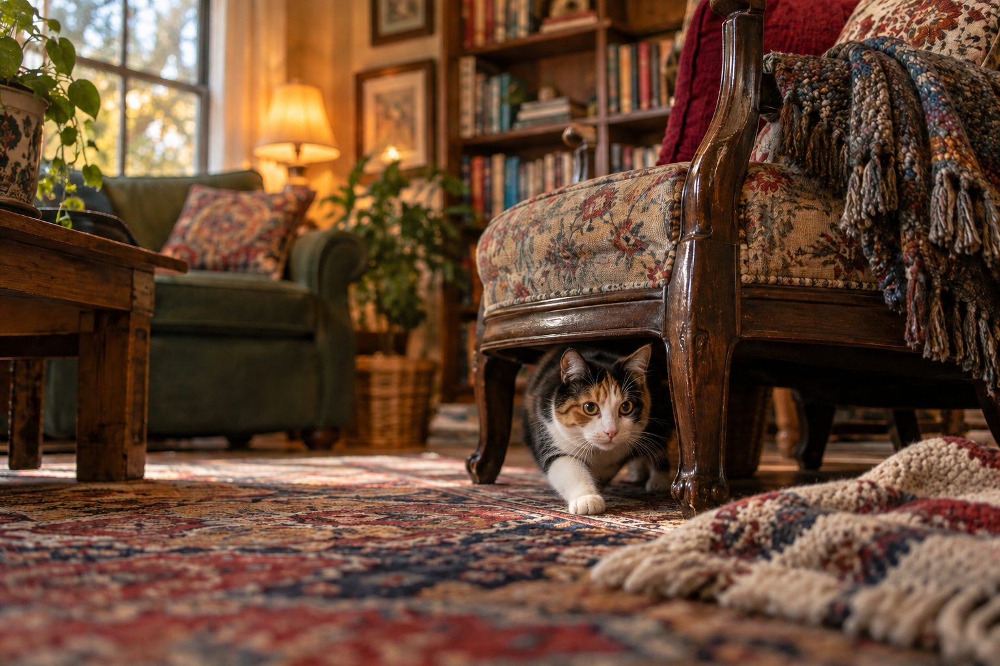

Give your cat a quiet safe space, observe eating and litter habits, and contact a veterinarian if hiding is sudden, persistent, or accompanied by other changes.
Cats often seek small, sheltered places when the home feels busy. But a cat who suddenly hides much more than usual may also feel unwell. The most useful first step is to compare the new behavior with your cat’s normal pattern.
Consider changes around the cat
Visitors, a move, loud work, another animal, or a changed routine can make a cat retreat. Provide a quiet room with water, litter, a bed, and a familiar scent. Let the cat emerge on its own rather than pulling it out of a hiding spot.
Keep interactions predictable: speak softly, offer a small treat nearby, and leave an escape route. Some cats need hours to settle after a disruption; others take days.
First compare the hiding with your cat's usual pattern. Many cats choose quiet places for sleep and recover from visitors by retreating briefly. A sudden change is different: a normally social cat that stays under a bed through meals, avoids the litter box, or resists ordinary interaction deserves closer attention. Note the start time and what else changed that day. New people, renovations, unfamiliar smells, another animal, or a moved food bowl may affect security, but an environmental event does not rule out illness.
Watch from a respectful distance rather than pulling the cat from its hiding place. Check whether food and water disappear, whether the litter box is used, and whether the cat moves comfortably when it does emerge. A short video can capture gait or breathing without forcing contact. If you cannot verify basic eating and toileting, make a timely veterinary call.
Look for signs of illness or pain
Check whether your cat is eating, drinking, grooming, moving, and using the litter box as usual. Vomiting, diarrhea, straining to urinate, limping, or unusual breathing changes the picture. A cat that does not eat or cannot urinate needs prompt veterinary attention.
Do not assume that a shy mood explains a sudden change. Cats can hide when they feel pain or weakness, and a veterinarian can determine the underlying cause.
Pain and illness can make a cat seek privacy. Look for vomiting, diarrhea, reduced appetite, changes in drinking, difficulty jumping, unusual posture, or a coat that is no longer groomed normally. Cats may show subtle signs, so a single dramatic symptom is not required before asking for help. If a cat is repeatedly visiting the litter box, straining, or unable to pass urine, treat that as urgent. Do not wait for the cat to become willing to come out before making the call.
Avoid guessing a diagnosis from location. A cat hiding in a closet could be frightened, uncomfortable, overheated, or simply choosing a quiet space. The useful information is the change from normal and the other signs alongside it. Bring a timeline, medications, appetite notes, and any recent household changes to the veterinary team. That helps them separate medical and environmental possibilities.

Make the environment feel safer
Offer vertical perches, covered beds, and more than one route through shared rooms. Place essentials where another pet cannot block access. Keep feeding and play times consistent, and use short, calm play sessions when your cat shows interest.
If the home has multiple cats, watch for subtle tension around doorways and litter boxes. Resource separation can reduce pressure without forcing the cats to interact.
Make the room safer without eliminating every hiding spot. A covered bed or open box in a quiet area lets the cat retreat while remaining easy to observe. Place water, food, and litter where the cat can reach them without passing a threatening animal. Keep normal feeding times and speak softly. Do not reach into a hideaway to force interaction; a cat that controls its distance often recovers confidence more readily. Offer play or a treat nearby, then allow the cat to decide whether to approach.
If another pet is involved, consider whether it is blocking doors or resources. Separate feeding and toileting stations can reduce pressure even when the animals never fight openly. For a recent move, keep one familiar room as a base and expand access gradually. Environmental adjustments support the cat, but they should not delay veterinary assessment when eating, elimination, breathing, or mobility has changed.
Know when to seek help
If hiding persists beyond a brief disturbance, or you notice reduced appetite, abnormal litter habits, or low energy, arrange a veterinary appointment. Seek urgent care for breathing difficulty, collapse, inability to urinate, or severe distress. Record the timing of the behavior and other symptoms.
Decide urgency from the whole picture. A cat that briefly hides after a noisy visitor, then eats dinner and resumes normal behavior, can be observed. A cat that hides continuously, refuses food, vomits repeatedly, or seems weak needs prompt advice. Contact a veterinarian quickly for a cat that has not eaten, particularly if it has a medical history, and seek urgent care for difficulty breathing or inability to urinate. If you are unsure, call and describe the signs rather than waiting for a specific number of hours from an online list.
While arranging care, keep the cat safely contained and avoid giving human medicine. Prepare the carrier calmly with familiar bedding. If the cat is painful or terrified, ask the clinic for safe transport guidance. Your job is to report what you observed and get the cat examined, not to solve the cause from a hiding place alone.
Practical details
Read the behavior in context
Hiding after a noisy visitor arrives is different from a cat disappearing into a closet for no apparent reason. Note the exact time the behavior started and what changed that day: a move, repair work, a new pet, a changed feeding area, or medication. A short response to an obvious disturbance may improve once the home becomes quiet again. A sudden pattern without a clear trigger deserves more attention.
Do not pull the cat out to test whether it is fine. Instead, place water, food, and a clean litter box within easy reach of a safe area. Observe from a distance. A cat who ventures out when the house is quiet but eats and toilets normally presents a different picture from a cat who does neither.
A calm first check for a hiding cat
Offer a quiet room and monitor whether the cat eats, drinks, and uses the box normally.
Look for other changes and call the veterinarian if the behavior persists or feels unusual.
Arrange veterinary advice promptly; do not assume stress explains everything.
Seek urgent veterinary care instead of waiting for the cat to come out on its own.
Home setup can reduce pressure
Cats feel safer when they can choose a sheltered bed, a high perch, and a route away from other animals. A hiding place should be accessible to you in an emergency but private enough that the cat can rest. If another pet guards a doorway or litter box, provide separated resources. Keep predictable meal and play times while your cat regains confidence.
In a multi-cat home, tension can be subtle. One cat may stare, block a hallway, or wait near the only litter box without a visible fight. Spreading resources across the home can help. Avoid forcing the cats together for reassurance; gradual, calm access is more useful.
Keep a brief observation record during a change. Note the last known meal, water intake, urine and stool, how the cat moves, and whether it interacts at night when the home is quiet. A household camera may reveal that a cat emerges only when another pet is absent. That points toward a possible social issue, although it does not exclude illness. Avoid changing several household factors simultaneously unless safety requires it; controlled changes make it easier to understand what helped.
If a veterinary assessment finds no urgent medical issue, think about predictable routines. Provide hiding, perching, scratching, play, and resources in more than one location. Introduce visitors gradually and let the cat choose contact. A cat can be both shy and healthy, but a sudden shift from its own baseline deserves respect. Monitor whether confidence returns rather than declaring success after one brief appearance.
The medical threshold
Cats may hide when they feel pain, nausea, or weakness. Watch for vomiting, diarrhea, limping, changes in breathing, or a coat that suddenly looks unkempt. If the cat is not eating, contact a veterinarian promptly. Straining to urinate or repeated litter-box trips with little output are urgent signs, especially in male cats.
A veterinarian can assess the whole picture rather than guessing from hiding alone. Take a short video if movement looks unusual and bring a timeline of meals, drinking, and litter use. Do not give human medication or assume a calming product will solve a symptom that could be medical.
Consider a cat that vanishes when a new puppy arrives. The apparent trigger is obvious, yet the cat also stops eating and no longer uses the litter box. It would be unsafe to treat those signs as mere adjustment. Contact the veterinarian, establish a puppy-free refuge, and record eating and toileting while introductions are paused. By contrast, a cat that retreats during a short visit and returns to its usual evening routine may simply need an undisturbed resting place.
After the immediate concern is addressed, preserve safe options. A box or elevated perch should remain available even when the cat is social again. Hiding is a normal coping behavior; the concern is a sharp, persistent, or medically accompanied change. Reviewing the pattern with a clinician is especially useful for older cats, whose pain or illness may first appear as a change in where they spend time.
If the cat hides after an obvious disturbance, restore calm and then check whether normal behaviors resume. Leave the hiding place available, bring food and water within safe reach, and monitor the litter box. Avoid announcing that the problem is solved because the cat emerged once for a treat. A healthy recovery includes ordinary eating, grooming, movement, and rest. If the cat remains withdrawn or returns to hiding immediately after a brief appearance, keep observing and consult the veterinarian when the pattern persists.
For a home with children or visitors, explain that the cat's retreat is private. No one should pull it out or block the exit. A quiet elevated perch may provide another option once the cat is ready to explore. Keep introductions brief and let the cat approach. If the change began with a new pet, ensure separate resources and safe routes before resuming contact. These steps reduce pressure, but they are not a substitute for medical care when the cat stops eating, strains to urinate, or appears ill.
What to observe while your cat hides
Give the cat an accessible quiet retreat and keep food, water, and a litter box available. Without pulling the cat out, look for evidence that it has eaten, drunk, and used the box. Notice whether the hiding started after a visitor, a new animal, loud work, or a change in routine. A cat that emerges at night but avoids a noisy room may need a calmer environment.
Sudden hiding can also accompany pain or illness. Check for vomiting, changes in breathing, limping, a hunched posture, or reduced appetite. If your cat will not eat, cannot urinate normally, seems weak, or is unusually unresponsive, contact a veterinarian promptly. A short video of movement or breathing can be useful when describing the change. Keep handling gentle and allow the cat control over when to come out.
Once medical concerns are addressed, make the retreat predictable. Place a familiar blanket nearby, reduce foot traffic, and invite exploration with play at the cat's pace. Do not close off every hiding place at once. A gradual return to normal behavior is more informative than one brief appearance for a treat.
Continue exploring
For a broader routine, read How Often Should You Change Cat Litter?, Why Does My Cat Meow at Night?, and How to Trim a Cat's Nails Without a Struggle.
Frequently Asked Questions
Do cats hide when they are sick?
They can, but hiding alone does not reveal a cause. Look for other changes and consult a veterinarian.
Should I pull my cat out of hiding?
Usually no. Offer a safe space and let the cat choose when to come out unless urgent care is needed.
How long is too long for a cat to hide?
A short response to a clear stressor may settle. Persistent or unexplained hiding merits a veterinary call.
Editorial references
These resources informed the general guidance in this article. They do not replace advice tailored to your pet.
This guide offers general information. Your pet’s age, health, and history may call for a different plan. For medical concerns, ask your veterinarian.